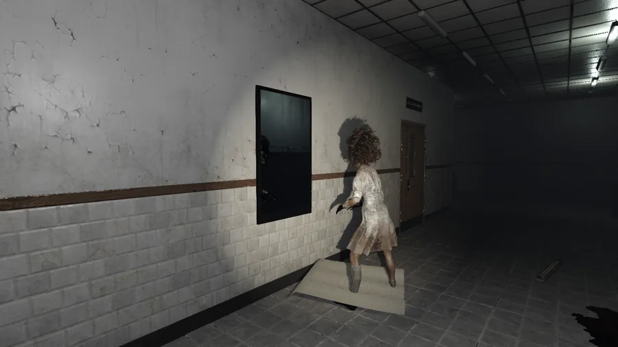
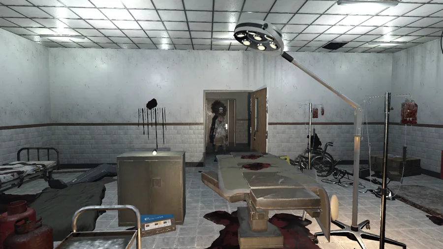
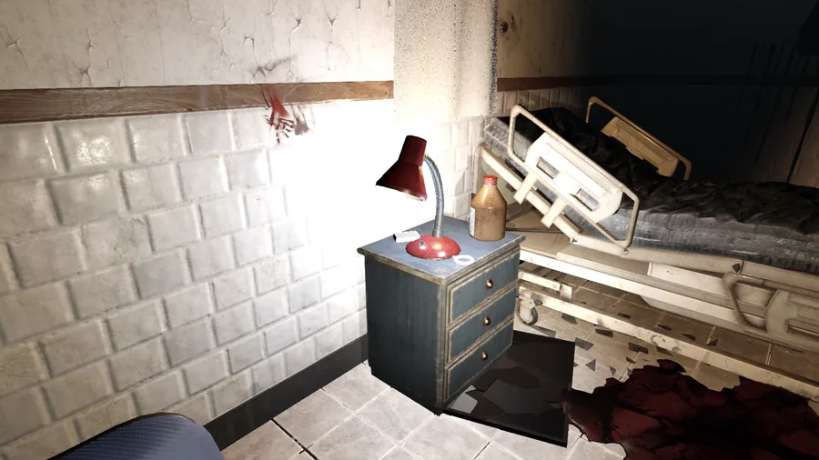

64 bpm The game
You wake up
on an operating
table.
SAINT-MARC is a first-person survival horror game set in an
abandoned hospital. You come to strapped to a table in an operating
theatre, with no name and no memory, next to instruments that were
never meant to heal anyone.
There is no weapon. You have a flashlight that gives you
away, the dark, beds to slide under, lockers to shut yourself in, and the
notes the staff left behind. Each chapter is another part of the
hospital, and in each one something still walks the corridors — someone
who used to work there, or to be treated there. Every note you read tells
you a little more about who they were. And about who you were.
91 bpm The rules
Three rules, and the
whole night is in them.

She hates her face
The night nurse can't stand her own reflection: guilt has twisted her
face. The ward's mirrors are covered with sheets. Tear one off and
she recoils, turns away, goes the long way round. Lure her back to the
same mirror and she smashes it.

Light is a place
When the power comes back, a few rooms light up, white and merciless.
She won't step under that light — she waits at the door, out of sight of
herself. A lit room is safe. Until she decides it isn't.

Puzzles you hold
Few codes. Things are found, turned over, examined, put back where they
belong — a bracelet with something engraved on the back, a treatment that
has to go in the right order. Every mistake makes a noise. She hears it.
118 bpm What is in the box
6Chapters
3 hStraight through
13Hiding places, chapter 1
8Mirrors, chapter 1
2Epilogues
0Weapons
Every chapter has its own threat and its own rule: one hears you, one sees
far but never leaves its ground, one you only glimpse behind you. Screaming
is a sound like any other — and they come to it. The two epilogues are not a
choice made at the end: they depend on what you took the time to read along
the way.
145 bpm The voice
Nobody tells
you what to do.
You tell yourself.
No tutorial panels, no objective markers. The character
talks under his breath: he notices that a bed is high enough to hide
under, that a locker opens, that a room has changed while he was away.
The voice doubts. It never explains. It never says the
truth before you have worked it out.
- “Cold. A light, above me. Where…?”Waking up
- “The operating room, lit. The table has been remade — a sheet pulled tight, tucked in at the corners. While I was outside.”Coming back
- “Darkness. …Someone, in the doorway. She doesn't move. She's waiting for the light to come back, so she won't see herself.”The safe room
172 bpm Press & contact
Still being
built. Come and
be afraid.
SAINT-MARC has no store page and no release date yet. If
you want a build — to play it, or to write about it — the address below
reaches the person who writes it.
- Status
- In development
- Engine
- Godot 4.7 · Windows
- Language
- French
- Content
- Blood, medical violence, psychological horror